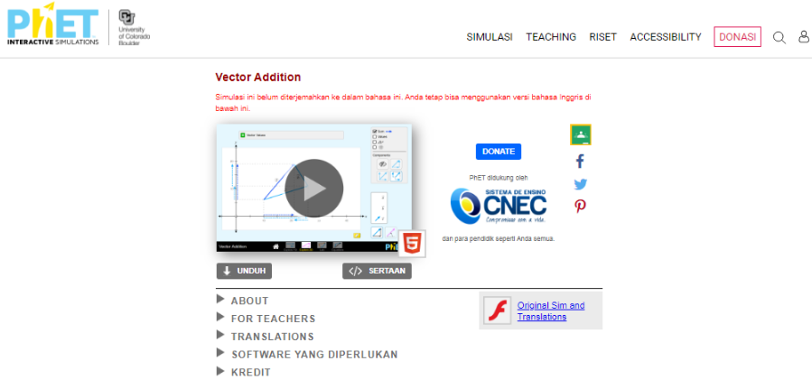
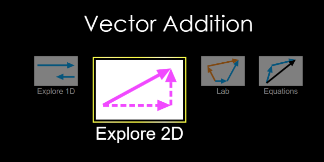
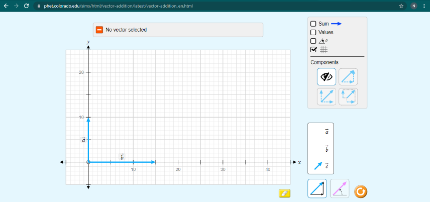
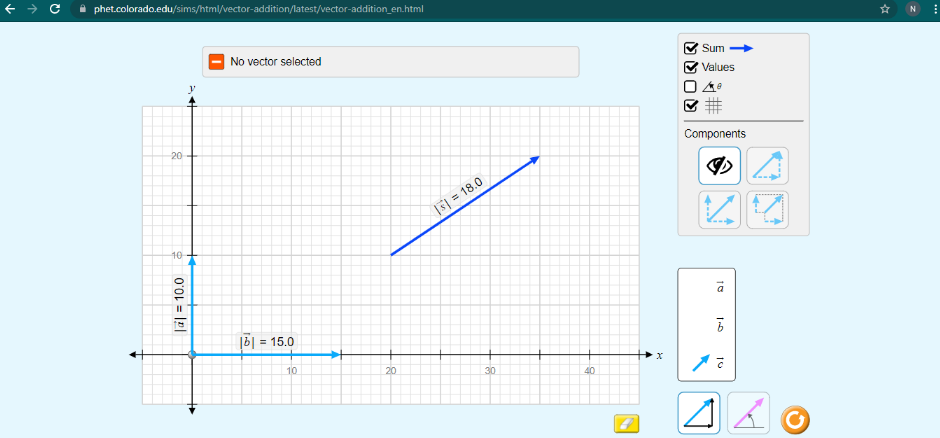
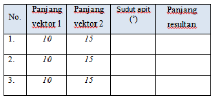

Permainan balogo adalah permainan tradisional dari Kalimantan Selatan menggunakan logo yang dipukul agar meluncur dilantai dan mengenai logo yang lain. Sebuah logo yang meluncur memberikan pergerakan dan menghasilkan suatu perpindahan. Bagaimana pengaruh sudut apit terhadap panjang resultan logo yang saling bertumbukan?
Indikator Pencapaian Kompetensi
(IPK)
4.3.1 Membuat rumusan hipotesis pada percobaan resultan vektor sebidang.
4.3.2 Mengidentifikasi variabel dan definisi operasional variabel pada percobaan resultan vektor
sebidang.
4.3.3 Menganalisis data hasil percobaan pada percobaan resultan vektor sebidang.
4.3.4 Membuat kesimpulan data hasil percobaan pada percobaan resultan vektor sebidang.
4.3.5 Mempresentasikan data hasil percobaan pada percobaan resultan vektor sebidang dan makna fisisnya.
A. Tujuan Percobaan
Untuk mengetahui pengaruh sudut apit vektor terhadap resultan vektor.
B. Alat dan bahan
Untuk mengetahui pengaruh sudut apit vektor terhadap resultan vektor.
C. Rumusan Masalah
Bagaimanakah pengaruh sudut apit vektor terhadap resultan vektor?
D. Langkah Kerja
Bagaimanakah pengaruh sudut apit vektor terhadap resultan vektor?
- Hidupkan HP/komputer/laptop terlebih dahulu.
-
Klik link aplikasi phet yang sudah diberikan sampai terlihat pada gambar di bawah.
Gambar 4.1 Tampilan awal phet percobaan vektor -
Setelah itu klik tombol ‘’play’’ sehingga muncul tampilan berikut pilih explore 2D.
Gambar 4.2 Tampilan setelah diklik play. -
Silahkan klik gambar yang bertuliskan anak panah atau lambang vektor a dengan jarak 10 dan vektor b
dengan jarak 15 lalu atur sudut apitnya 90°.
Gambar 4.3 Tampilan ketika diklik anak panah atau vektor. -
Klik value dan sum di samping kanan sehingga didapatkan nilai resultan perpindahan.
Gambar 4.4 Tampilan ketika diklik value dan sum. - Ulangi langkah 4 dan 5 untuk sudut apit yang berbeda 2 kali dengan besar sudut apit antara 0° sampai 90°.
-
Tuliskan hasil pengukuran pada tabel hasil pengamatan.
Gambar 4.5 Tabel hasil pengamatan.